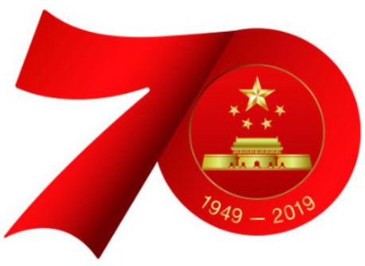

传统美德
学校：中南大学网络教育学院
姓名：张战伟
学号：16111519039003

The Great Traditional Spirits Of Chinese
 中华美德
中华美德
中华民族传统美德，是指中国五千年历史流传下来，具有影响，可以继承，并得到不断创新发展，有益于下代的优秀道德遗产。 概括起来就是：中华民族优秀的道德品质、优良的民族精神、崇高的民族气节、高尚的民族情感以及良好的民族习惯的总和。 它标志着中华民族的“形”与“魂”。它也是我国人民两千多年来处理人际关系、人与社会关系和人与自然关系的实践的结晶。
中华传统美德是中华民族在五千年的发展中一代又一代所凝聚起来的，形成的以爱国主义为核心的伟大的民族精神。 中华民族在五千年的文明进程中，不仅创造了光辉灿烂的文化，与灿烂文化相共生，还形成了代代传承的美德。 底蕴之深厚，内容之精深，涉及到社会生活的各个领域。
上自为太子，受《尚书》于桓荣，及即帝位，犹尊荣以师礼。 尝幸太常府，令荣坐东面，设几杖，会百官及荣门生数百人，上亲自执业；诸生或避位发难，上谦曰：“太师在是。” 既罢，悉以太官供具赐太常家。荣每疾病，帝辄遣使者存问，太官、太医相望于道。及笃，上疏谢恩，让还爵士④。 帝幸其家问起居，入街，下车，拥经而前，抚荣垂涕，赐以床茵、帷帐、刀剑、衣被，良久乃去。自是诸侯、将军、大夫问疾者， 不敢复乘车到门，皆拜床下。荣卒，帝亲自变服临丧送葬，赐冢茔于首山之阳。子郁当嗣，让其兄子泛；帝不许，郁乃受封，而悉以租入与之。 帝以郁为侍中
The Great Traditional Spirits Of Chinese
未经张战伟同意，不得转载本网站